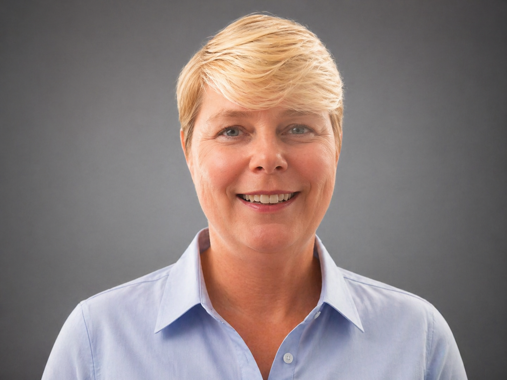

Clarity before complexity
AI becomes easier to adopt when leaders and teams share the same language and understand the real limits of the tools.
Founder-led AI fluency
The AI Fluency Company was founded by Zoë François to help executive teams adopt AI in a way that is practical, governed, measurable, and commercially real.

Cape Town based. Working with clients across South Africa and internationally.
Founder story
Zoë trained as a chemical engineer and built one of South Africa's earliest applied industrial AI systems in the 1990s: an expert system on the Gensym G2 platform that modelled Anglo American Platinum's new refinery operations.
From there, three decades in commercial leadership followed, including senior roles across Sappi, culminating as General Manager of Sales, and Senior Sales Executive at Consol Glass.
The AI Fluency Company brings those two threads together: engineering rigour and commercial judgement. The work helps executive teams understand where AI belongs, how it should be governed, and how to measure whether it is earning its place.
Zoë holds the Oxford Saïd Business School AI Programme certificate and the Anthropic AI Fluency course. She is based in Cape Town and works with clients across South Africa and internationally.
Most AI consulting today repeats the mistakes I watched technology projects make for thirty years. The pitch was wrong, the language was wrong, and no one translated it into commercial reality. We're built to fix that.
Zoë François
Founder principles
AI becomes easier to adopt when leaders and teams share the same language and understand the real limits of the tools.
Responsible AI is designed early, with policies, roles, controls, and ISO/IEC 42001 readiness built into the adoption path.
Every meaningful AI use case should have a way to track value, adoption, effort saved, risk reduced, and business impact.
Start the conversation
Complete the assessment, then book a short debrief to discuss what your score means and where to focus next.